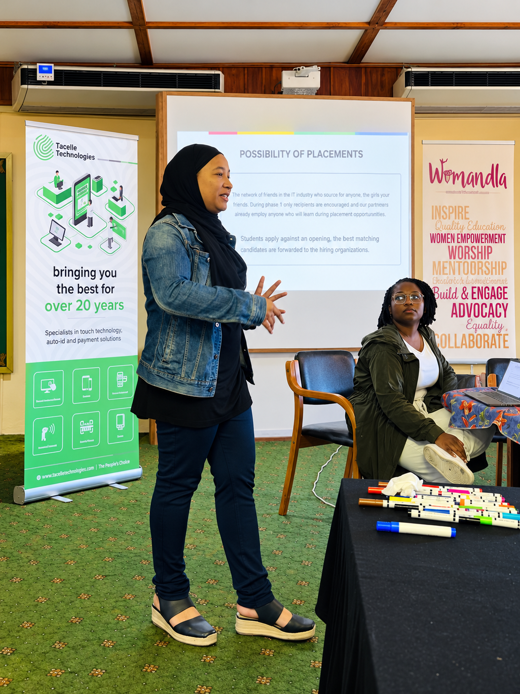

Our story / Abdeyah Fredericks
Abdeyah Fredericks
Turning skills into opportunity.

Abdeyah Fredericks founded AF Project & Programme Management (AFPPM) with a clear purpose: to connect talent, skills and funding with opportunities that lead to dignified work.
She has since built AFPPM into a programme design and delivery business that brings together digital skills training, entrepreneurship support, project management and pathways into employment. Together with a committed team, she is creating the support people need to move from learning to earning.
That purpose is already taking shape through CodeGirls South Africa, AFPPM's flagship programme. Women from its first and second cohorts have been placed in jobs, demonstrating what becomes possible when training is connected to opportunity. With more than 400 applications for just 25 places in a subsequent intake, the demand is clear—and so is the responsibility to build further.
AFPPM's next chapter is its Excellence Hub: a practical environment being developed for graduates to gain experience through live projects, mentorship and client work. From websites and e-commerce to business digitalisation and robotics-related projects, the Hub is designed to help emerging talent build portfolios, strengthen workplace skills and prepare for employment or entrepreneurship.
This vision is supported by a growing network of relationships and developing partnerships, including SANZAF, WPDI, LaunchPath, UGI in the United States and ConsulNet in Pakistan. These connections reflect Abdeyah's ambition to bring expertise, resources and opportunities together across borders.
AFPPM is also in discussions about potential projects in Namibia, Burkina Faso and Egypt, exploring how its approach to skills development and pathways into work could support communities in these countries. These projects remain at the discussion stage as relationships and opportunities are explored.
What she created AFPPM to be is becoming increasingly tangible: a business that designs programmes, delivers on the ground and builds pathways from potential to participation in the economy.
For funders, employers and partners, the invitation is to be part of that work—through supporting training, commissioning projects and opening doors for emerging talent.
AFPPM. Turning funding into dignified jobs.
What guides the work
People centred.
Accountability focused
Dignity
Design opportunities around people's potential and the futures they want to build.
Delivery
Bring the planning, coordination and consistent follow-through that ambitious programmes need.
Partnership
Connect complementary expertise and shared commitment to make meaningful progress together.
The next chapter starts with a conversation